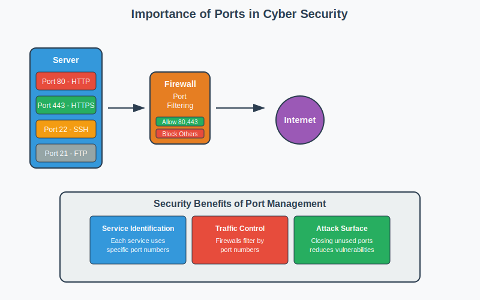

Network Ports
Gateways to Network Services
Understanding Communication Endpoints

Network Ports Definition
Network Port is a numerical identifier that allows different applications and services on the same device to communicate over a network by creating distinct communication endpoints.
Key Concepts:
- Virtual Endpoints: Logical communication points
- Process Identification: Multiple services on same IP
- Transport Layer: Works with TCP/UDP protocols
- 16-bit Numbers: Range from 0 to 65,535
- Bidirectional: Support both incoming and outgoing connections
Real-World Analogy
Apartment Building Analogy:
IP Address = Building Address (123 Main Street)
Network Ports = Apartment Numbers (Apt 80, Apt 443, etc.)
Just as mail needs both:
• Building address to find the right building
• Apartment number to reach the right resident
Network traffic needs:
• IP address to find the right computer
• Port number to reach the right application
Example:
192.168.1.100:80 → Web server
192.168.1.100:22 → SSH server
192.168.1.100:25 → Email server
Importance of Network Ports
Why Ports Matter:
- Service Multiplexing: Multiple services on single device
- Process Isolation: Separate communication channels
- Security Control: Granular access management
- Network Organization: Standardized service identification
- Troubleshooting: Identify communication issues
- Performance Optimization: Load balancing and routing
Security Perspective: Ports are attack vectors - each open port is a potential entry point for attackers
Types of Network Ports
TCP Ports:
- Connection-oriented
- Reliable data delivery
- Error checking and recovery
- Flow control
- Examples: HTTP, HTTPS, SSH, FTP
UDP Ports:
- Connectionless
- Faster transmission
- No error recovery
- Lower overhead
- Examples: DNS, DHCP, SNMP
Protocol Selection: Applications choose TCP for reliability or UDP for speed based on their requirements
Port Number Categories
| Range |
Category |
Description |
Examples |
| 0-1023 |
Well-Known Ports |
System ports, require admin privileges |
HTTP (80), HTTPS (443), SSH (22) |
| 1024-49151 |
Registered Ports |
IANA registered for specific services |
MySQL (3306), PostgreSQL (5432) |
| 49152-65535 |
Dynamic/Private |
Ephemeral ports for client connections |
Temporary client-side ports |
IANA: Internet Assigned Numbers Authority manages port number assignments
Essential Well-Known Ports
| Port |
Protocol |
Service |
Description |
| 20/21 |
TCP |
FTP |
File Transfer Protocol |
| 22 |
TCP |
SSH |
Secure Shell |
| 23 |
TCP |
Telnet |
Unencrypted remote access |
| 25 |
TCP |
SMTP |
Simple Mail Transfer Protocol |
| 53 |
UDP/TCP |
DNS |
Domain Name System |
| 67/68 |
UDP |
DHCP |
Dynamic Host Configuration |
| 80 |
TCP |
HTTP |
Hypertext Transfer Protocol |
| 110 |
TCP |
POP3 |
Post Office Protocol v3 |
Additional Important Ports
| Port |
Protocol |
Service |
Description |
| 143 |
TCP |
IMAP |
Internet Message Access Protocol |
| 161/162 |
UDP |
SNMP |
Simple Network Management |
| 443 |
TCP |
HTTPS |
HTTP Secure |
| 993 |
TCP |
IMAPS |
IMAP over SSL |
| 995 |
TCP |
POP3S |
POP3 over SSL |
| 3389 |
TCP |
RDP |
Remote Desktop Protocol |
| 5432 |
TCP |
PostgreSQL |
Database server |
| 3306 |
TCP |
MySQL |
Database server |
Port States and Status
Port States:
- Open: Application actively listening for connections
- Closed: No application listening, but port accessible
- Filtered: Firewall or filter blocking access
- Open|Filtered: Cannot determine if open or filtered
- Closed|Filtered: Cannot determine if closed or filtered
Port Scanning Example (nmap):
$ nmap -p 80,443,22 192.168.1.100
PORT STATE SERVICE
22/tcp open ssh
80/tcp open http
443/tcp closed https
Port Security Risks
Security Threats:
- Port Scanning: Reconnaissance for open services
- Service Fingerprinting: Identifying vulnerable applications
- Brute Force Attacks: Attacking authentication on open ports
- Buffer Overflow: Exploiting service vulnerabilities
- Denial of Service: Overwhelming services with requests
- Backdoors: Unauthorized remote access services
Attack Example:
1. Attacker scans for open port 22 (SSH)
2. Discovers SSH service is running
3. Attempts brute force login attack
4. Gains unauthorized system access
Port Scanning and Discovery
Popular Port Scanning Tools:
- Nmap: Network mapper and port scanner
- Netstat: Display network connections and listening ports
- ss: Modern replacement for netstat (Linux)
- Masscan: High-speed port scanner
- Zmap: Fast single packet network scanner
Common Commands:
# Check listening ports on local system
netstat -tuln
ss -tuln
# Scan remote host ports
nmap -p 1-1000 192.168.1.100
nmap -sS -O 192.168.1.0/24
# Quick scan for common ports
nmap --top-ports 100 target.com
Secure Port Configuration
Security Best Practices:
- Principle of Least Privilege: Open only necessary ports
- Regular Auditing: Scan and review open ports
- Service Hardening: Secure applications running on ports
- Firewall Configuration: Block unnecessary ports
- Change Default Ports: Move services from well-known ports
- Monitor Port Activity: Log and analyze port access
- Update Services: Keep applications current
- Access Control: Restrict source IP addresses
Port Filtering with Firewalls
Firewall Rules Example:
iptables Examples:
# Allow SSH from specific network
iptables -A INPUT -s 192.168.1.0/24 -p tcp --dport 22 -j ACCEPT
# Allow HTTP and HTTPS
iptables -A INPUT -p tcp --dport 80 -j ACCEPT
iptables -A INPUT -p tcp --dport 443 -j ACCEPT
# Block all other incoming traffic
iptables -A INPUT -j DROP
# Allow outgoing DNS requests
iptables -A OUTPUT -p udp --dport 53 -j ACCEPT
Port Management and Monitoring
System Administration:
- netstat - Network statistics
- ss - Socket statistics
- lsof - List open files/ports
- fuser - Identify processes using ports
- systemctl - Service management
Security Monitoring:
- nmap - Network scanning
- wireshark - Packet analysis
- tcpdump - Command-line packet capture
- netcat - Network debugging
- SIEM tools - Security monitoring
Dynamic vs Static Port Usage
Static/Listening Ports:
- Services bind to specific ports
- Always listening for connections
- Well-known or registered numbers
- Examples: Web server on 80, SSH on 22
Dynamic/Ephemeral Ports:
- Temporarily assigned to client connections
- Short-lived, released after use
- High-numbered ports (49152+)
- Examples: Browser connecting to websites
Connection Example:
Client (192.168.1.50:54321) → Server (192.168.1.100:80)
Client uses ephemeral port 54321, server listens on static port 80
Port Troubleshooting
Common Issues and Solutions:
- Port Already in Use: Another process using the port
- Connection Refused: No service listening on port
- Connection Timeout: Port blocked by firewall
- Permission Denied: Insufficient privileges for well-known ports
Troubleshooting Commands:
# Find process using port 80
lsof -i :80
fuser -n tcp 80
# Check if port is reachable
telnet target.com 80
nc -zv target.com 80
# Test UDP connectivity
nc -u target.com 53
Key Takeaways
- Ports enable multiple services on single IP addresses
- Port ranges: Well-known (0-1023), Registered (1024-49151), Dynamic (49152+)
- Each open port represents potential security risk
- Regular port auditing is essential for security
- Firewalls provide critical port-level access control
- Understanding ports aids in troubleshooting network issues
- Security principle: Close unnecessary ports, secure necessary ones
Remember: Proper port management balances functionality with security
Thank You
Questions & Discussion
Next: HTTPS Deep Dive